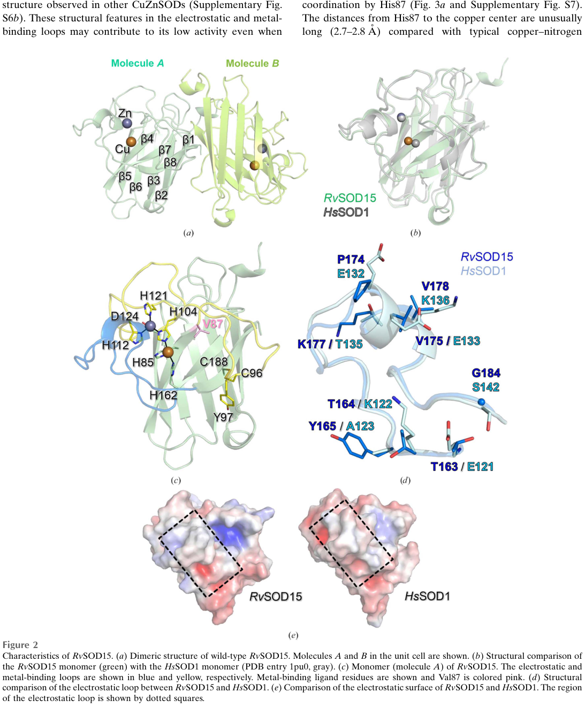

Mitochondrial manganese/iron superoxide dismutase (Mn/Fe-SOD) from the tardigrade Ramazzottius varieornatus. This is a member of the Mn/Fe-SOD family (InterPro IPR001189, IPR019831, IPR019832, IPR019833) - a completely different protein family from the Cu/Zn-SODs that constitute most of the R. varieornatus SOD repertoire. Mn/Fe-SODs are typically located in mitochondria (in eukaryotes) and use a single Mn or Fe ion for catalysis, unlike Cu/Zn-SODs which use a Cu+Zn binuclear center. The protein is predicted to be located in mitochondrion and may be part of a respiratory chain complex (UniRule annotations). 230 aa with an N-terminal extension consistent with a mitochondrial targeting peptide. NOTE: Earlier bioinformatic analysis incorrectly compared this protein to human SOD1 (Cu/Zn-SOD) and found low sequence conservation - this was because they belong to different protein families, NOT because RvY_01767 is degraded.
| GO Term | Evidence | Action | Reason |
|---|---|---|---|
|
GO:0004784
superoxide dismutase activity
|
IEA
GO_REF:0000120 |
ACCEPT |
Summary: Standard automated annotation for the Mn/Fe-SOD family. The protein belongs to the Mn/Fe-SOD InterPro families (IPR001189, IPR019831, IPR019832, IPR019833), which is a distinct protein family from Cu/Zn-SOD. This annotation is appropriate for canonical Mn/Fe-SODs and we have no evidence to suggest this protein has lost catalytic function.
Reason: Family-based assignment is appropriate for an unreviewed Mn/Fe-SOD from a non-model organism with no experimental data.
|
|
GO:0005739
mitochondrion
|
IEA
GO_REF:0000120 |
ACCEPT |
Summary: Standard subcellular location for eukaryotic Mn-SOD (homologous to human SOD2). The protein has an N-terminal extension consistent with a mitochondrial targeting peptide.
|
|
GO:0006801
superoxide metabolic process
|
IEA
GO_REF:0000002 |
ACCEPT |
Summary: Standard biological process annotation for SOD enzymes.
|
|
GO:0019430
removal of superoxide radicals
|
IEA
GO_REF:0000108 |
ACCEPT |
Summary: More specific child of GO:0006801, inferred from SOD activity.
|
|
GO:0030145
manganese ion binding
|
IEA
GO_REF:0000118 |
ACCEPT |
Summary: Mn-SOD requires manganese as catalytic cofactor. This annotation is consistent with the Mn/Fe-SOD family assignment.
|
|
GO:0046872
metal ion binding
|
IEA
GO_REF:0000002 |
KEEP AS NON CORE |
Summary: Parent term of GO:0030145 (manganese ion binding). Redundant with the more specific annotation.
|
|
GO:0098803
respiratory chain complex
|
IEA
GO_REF:0000117 |
REMOVE |
Summary: This annotation comes from an ARBA rule (ARBA00029130) and is unusual for a Mn-SOD. Mitochondrial Mn-SOD (SOD2) is typically located in the mitochondrial matrix as a soluble enzyme, NOT as part of the respiratory chain complex. The respiratory chain consists of complexes I-IV plus ATP synthase, none of which contain SOD as a constituent. This appears to be an over-annotation by the ARBA rule.
Reason: Mitochondrial Mn-SOD is a soluble matrix protein, not part of the respiratory chain complex. The ARBA rule appears to be incorrect for this annotation.
|
The research report should be a detailed narrative explaining the function, biological processes, and localization of the gene product. Citations should be given for all claims.
You should prioritize authoritative reviews and primary scientific literature when conducting research. You can supplement
this with annotations you find in gene/protein databases, but these can be outdated or inaccurate.
We are specifically interested in the primary function of the gene - for enzymes, what reaction is catalyzed, and what is the substrate specificity? For transporters, what is the substrate? For structural proteins or adapters, what is the broader structural role? For signaling molecules, what is the role in the pathway.
We are interested in where in or outside the cell the gene product carries out its function.
We are also interested in the signaling or biochemical pathways in which the gene functions. We are less interested in broad pleiotropic effects, except where these elucidate the precise role.
Include evidence where possible. We are interested in both experimental evidence as well as inference from structure, evolution, or bioinformatic analysis. Precise studies should be prioritized over high-throughput, where available.
The UniProt target A0A1D1USM4 (gene: RvY_01767-1 / RvY_01767.1 / ORF RvY_01767) is annotated as superoxide dismutase (SOD), EC 1.15.1.1, belonging to the iron/manganese superoxide dismutase (Fe/Mn SOD) family. However, within the literature retrievable by the provided tools, no publication explicitly mentions this exact UniProt accession or this gene identifier, so gene-specific functional claims beyond the UniProt description must be treated as inference from enzyme family/domain evidence and R. varieornatus antioxidant-system context. (sadowskabartosz2024antioxidantdefensein pages 13-15, sim2023structureofa pages 3-4, sadowskabartosz2024antioxidantdefensein pages 15-16)
The broader R. varieornatus genome and tardigrade literature strongly supports that antioxidant defenses (including large SOD repertoires) are central to stress tolerance, but also warns that some tardigrade SOD paralogs can be atypical and potentially non-canonical. (sadowskabartosz2024antioxidantdefensein pages 13-15, sadowskabartosz2024antioxidantdefensein pages 15-16, sim2023structureofa pages 3-4)
Target identity (must-match constraints):
- Organism: Ramazzottius varieornatus (water bear/tardigrade).
- Protein: annotated as Superoxide dismutase, EC 1.15.1.1, Fe/Mn SOD family (UniProt-provided context).
- Gene symbol: RvY_01767-1 (syn. RvY_01767.1; ORF RvY_01767).
Verification outcome using tool-retrieved literature:
- Searches and evidence extraction across recent and foundational tardigrade papers yielded no explicit mention of UniProt A0A1D1USM4 or RvY_01767-1/RvY_01767.1. Therefore, the gene symbol is effectively literature-sparse for this specific locus in the accessible corpus, and it would be inappropriate to attribute to it results from other SOD paralogs (e.g., Cu/Zn SODs such as RvSOD15) without additional sequence mapping. (sim2023structureofa pages 3-4, sadowskabartosz2024antioxidantdefensein pages 15-16)
- Nonetheless, the organism-level context is strongly consistent with the presence of multiple SOD genes in R. varieornatus and other tardigrades. (sadowskabartosz2024antioxidantdefensein pages 13-15, hashimoto2016extremotoleranttardigradegenome pages 2-3)
Superoxide dismutases are metalloenzymes (EC 1.15.1.1) that catalyze the disproportionation (dismutation) of superoxide radicals. (zheng2023theapplicationsand pages 2-4, mishra2023achievingabioticstress pages 3-5)
Canonical reaction:
[2\,\mathrm{O_2^{\u2022-}} + 2\,\mathrm{H^+} \rightarrow \mathrm{H_2O_2} + \mathrm{O_2}] (mishra2023achievingabioticstress pages 3-5, zheng2023theapplicationsand pages 2-4)
The product H2O2 is subsequently handled by enzymes such as catalase, peroxiredoxins, and glutathione peroxidases; transport across membranes can occur via aquaporins in some contexts. (zheng2023theapplicationsand pages 4-5, zheng2023theapplicationsand pages 2-4)
For Mn- and Fe-dependent SODs, the catalytic metal is coordinated by three histidines, one aspartate, and a water/hydroxide ligand whose coordination state depends on the metal oxidation state. (zheng2023theapplicationsand pages 2-4)
Fe-SOD and Mn-SOD have closely related active-site architectures (same types of coordinating residues), supporting functional inference when a protein is assigned to the Fe/Mn SOD family by sequence/domain. (zheng2023theapplicationsand pages 2-4)
In eukaryotes, Mn-SOD (often termed SOD2) is typically mitochondrial, synthesized in the cytoplasm as a precursor with a mitochondrial targeting/transport peptide (reported up to ~24 amino acids) that is cleaved after import into the mitochondrial matrix. (zheng2023theapplicationsand pages 4-5)
Cross-eukaryote comparative analyses further support that Mn-SODs are predominantly mitochondrial, whereas Fe-SODs are mainly chloroplast-localized and most common in photosynthetic lineages—an important localization prior for annotating a tardigrade (non-photosynthetic) Fe/Mn family SOD. (lyall2020comparativeanalysisof pages 8-10)
Because gene-specific primary data were not found in the accessible corpus, the functional assignment below is explicitly inference from (i) Fe/Mn SOD family/domain membership (UniProt-provided) and (ii) canonical Fe/Mn SOD biochemistry and localization evidence in the literature.
Most likely molecular function: superoxide dismutase activity (EC 1.15.1.1): disproportionation of superoxide to oxygen and hydrogen peroxide. (zheng2023theapplicationsand pages 2-4, mishra2023achievingabioticstress pages 3-5)
Substrate specificity: primary substrate is the superoxide anion radical (O2•−); SODs are described as scavenging superoxide and producing H2O2 + O2. (zheng2023theapplicationsand pages 2-4, mishra2023achievingabioticstress pages 3-5)
Cofactor: expected to bind Mn or Fe at the active site, with the typical 3His/1Asp/water(hydroxide) coordination. (zheng2023theapplicationsand pages 2-4)
Tardigrade extreme stress tolerance (desiccation/anhydrobiosis, UV, radiation) is strongly linked to managing oxidative stress. A major expert synthesis highlights that antioxidant enzymes and low-molecular-weight antioxidants are important elements in this resistance and that antioxidant proteins are induced during anhydrobiosis and UV stress, consistent with the “preparation for oxidative stress” concept. (sadowskabartosz2024antioxidantdefensein pages 1-3)
Moreover, recent synthesis emphasizes that ROS can also be required as signals for successful cryptobiosis/tun formation: blocking cysteine thiols or reducing oxidized thiols can prevent tun formation and lead to death, and some antioxidant pretreatments reduce survival—arguing that antioxidant defenses must balance detoxification with preserving ROS signaling. (sadowskabartosz2024antioxidantdefensein pages 13-15)
Thus, RvY_01767-1/A0A1D1USM4, if a mitochondrial Fe/Mn SOD, would most plausibly contribute to mitochondrial ROS homeostasis, protecting macromolecules while still permitting ROS-dependent signaling required for stress transitions.
Given the strong prior that eukaryotic Mn/Fe SOD2-type enzymes are mitochondrial and possess N-terminal mitochondrial targeting peptides, and given that tardigrades are non-photosynthetic (making chloroplast-localized Fe-SOD less plausible), the most defensible inference is that A0A1D1USM4 is mitochondrial (matrix) or mitochondria-associated if it resembles canonical Mn-SODs. (zheng2023theapplicationsand pages 4-5, lyall2020comparativeanalysisof pages 8-10)
This remains a prediction until the A0A1D1USM4 N-terminus is checked for a mitochondrial targeting peptide and/or experimentally validated localization.
Multiple independent sources report that R. varieornatus has an expanded SOD repertoire:
- 16 SODs reported in the R. varieornatus genome assembly in a high-impact genome paper, compared to <10 in most metazoans. (hashimoto2016extremotoleranttardigradegenome pages 2-3)
- A 2024 review synthesizing multiple datasets reports 16 SODs and a table listing 17 SOD genes for R. varieornatus; the review also suggests SODs are likely distributed across mitochondria, cytosol, and peroxisomes, and notes high expression of CuZn-SODs in R. varieornatus. (sadowskabartosz2024antioxidantdefensein pages 13-15)
These data support that an Fe/Mn-family SOD gene such as RvY_01767-1 is biologically plausible within a large SOD gene family, but do not identify which of these correspond to A0A1D1USM4.
A key recent structural paper solved a Cu/Zn SOD (RvSOD15) from R. varieornatus and found that it contains an unusual substitution at a normally catalytic copper-ligand position and that other R. varieornatus SOD paralogs show missing or mutated metal-binding residues; the authors argue some RvSODs may have evolved to lose canonical SOD function, cautioning against assuming all SOD-like genes are functional enzymes. (sim2023structureofa pages 3-4, sim2023structureofa pages 2-3)
A 2024 review similarly notes unusual SOD structural features (e.g., deletions of electrostatic loops/β-sheets and unusual metal-binding residues) and the possibility of SOD-function loss in some paralogs. (sadowskabartosz2024antioxidantdefensein pages 15-16)
Therefore, for A0A1D1USM4, the Fe/Mn SOD family assignment implies canonical function, but the tardigrade context argues that experimental validation (activity assay and metal identity) is important.
A 2024 review emphasizes a modern view in which ROS are not merely damaging; ROS-mediated redox events can be necessary for tun formation and survival, and excessive antioxidant pretreatment can reduce survival under osmotic stress—supporting a nuanced framework for how SOD-like enzymes are integrated with redox signaling in tardigrades. (sadowskabartosz2024antioxidantdefensein pages 13-15)
The same review compiles evidence for expanded antioxidant repertoires (including SOD expansions) and additional mechanisms (e.g., AOX genes, altered peroxisomal pathways) that can limit ROS generation. (sadowskabartosz2024antioxidantdefensein pages 13-15)
A 2023 crystal structure paper provides direct structural evidence for a tardigrade SOD (Cu/Zn class, RvSOD15), mapping ligand residues and showing coordinated metals (Cu and Zn). While not directly about Fe/Mn SODs, it is the strongest recent structural demonstration that R. varieornatus encodes structurally bona fide SODs and that some are atypical. (sim2023structureofa pages 3-4, sim2023structureofa media 8c71c123, sim2023structureofa media ee73ca09)
Tardigrades also encode a distinct Mn-dependent peroxidase (g12777/AMNP) reported to have a “SOD-like” fold and Mn binding; it localizes to the Golgi and increases H2O2 stress tolerance when expressed in human cells. This underscores that SOD-like folds can be repurposed in tardigrades and reinforces the need for careful protein-specific functional validation. (yoshida2020anovelmndependent pages 26-29)
In typical eukaryotic cells, mitochondrial superoxide can be produced by respiration-related processes. A mitochondrial Mn/Fe SOD converts superoxide to H2O2, which is then processed by catalase/peroxiredoxins/GPx systems. (zheng2023theapplicationsand pages 2-4)
In tardigrades, antioxidant enzymes and small-molecule antioxidants increase during anhydrobiosis and UV exposures, consistent with a coordinated ROS-defense network (POS concept). (sadowskabartosz2024antioxidantdefensein pages 1-3)
Transcriptomic analyses in R. varieornatus stress contexts list conserved anti-oxidative stress proteins (including SODs) among components implicated in cross-tolerance, while also highlighting additional tardigrade-specific factors such as a Mn-dependent peroxidase with Golgi localization. (yoshida2022timeseriestranscriptomicscreening pages 1-2)
Although not specific to tardigrade A0A1D1USM4, SOD biology has substantial translational activity.
A 2024 double-blind, randomized, active-comparator controlled, non-inferiority trial tested GF101 (a Bacillus-derived antioxidative enzyme SOD product) versus CoQ10 for IVF outcomes over 12 weeks: 86 enrolled, 65 completed (30 GF101, 34 CoQ10). GF101 was non-inferior with risk differences of −6.27% (clinical pregnancy), −1.18% (live birth), and −13.49% (miscarriage), with wide confidence intervals; oxidative marker changes were modest (no significant between-group change in serum SOD). (shin2024theefficacyand pages 1-2)
A review summarizes that topical TAT-SOD before UVB exposure increased minimum erythema dose by 36.6 ± 18.4% and reduced apoptotic sunburn cells by 47.6 ± 8.6%, illustrating the importance of delivery systems for SOD efficacy. (zheng2023theapplicationsand pages 14-15)
A probiotic Lactobacillus plantarum strain producing SOD was reported with 2476.21 ± 1.52 U g−1 activity, and fermented yogurt SOD content of 19.827 ± 0.323 U mL−1, 63.01–146.79% higher than commercial yogurts—illustrating scalable production and incorporation into food matrices. (zheng2023theapplicationsand pages 12-14)
The SOD application literature emphasizes that major barriers include poor stability, short in vivo half-life, and limited membrane permeability, driving approaches such as PEGylation, encapsulation, and development of SOD mimetics and nanozymes. (zheng2023theapplicationsand pages 14-15, zheng2023theapplicationsand pages 15-16)
Key quantitative points directly relevant to the report:
- R. varieornatus SOD gene repertoire reported as 16–17 SOD genes (organism-level genomic context). (hashimoto2016extremotoleranttardigradegenome pages 2-3, sadowskabartosz2024antioxidantdefensein pages 13-15)
- 2024 IVF RCT of an SOD product: n=86 enrolled, 65 completed; non-inferiority risk differences reported for pregnancy, live birth, miscarriage. (shin2024theefficacyand pages 1-2)
- Topical UVB protection: +36.6 ± 18.4% minimum erythema dose and −47.6 ± 8.6% sunburn cells (reviewed data). (zheng2023theapplicationsand pages 14-15)
- Probiotic/food enrichment: 2476.21 ± 1.52 U g−1 SOD production; yogurt 19.827 ± 0.323 U mL−1, 63–147% higher than commercial. (zheng2023theapplicationsand pages 12-14)
The following figure crops provide primary visual evidence that R. varieornatus encodes structurally validated SOD enzymes, including canonical metal-binding architecture for a Cu/Zn SOD (RvSOD15). While not the Fe/Mn protein A0A1D1USM4, this is high-quality context for the broader SOD repertoire in the same organism. (sim2023structureofa media 8c71c123, sim2023structureofa media ee73ca09)
Because direct RvY_01767-1/A0A1D1USM4 literature was not found in the accessible corpus, the following steps would most efficiently convert inference into gene-specific evidence:
1. Sequence-level confirmation that A0A1D1USM4 contains conserved Fe/Mn SOD motifs and predicted metal-binding residues (3His/1Asp region) and is not a diverged pseudoenzyme.
2. Subcellular localization prediction/experiment: check for an N-terminal mitochondrial targeting peptide (expected for eukaryotic MnSOD-like enzymes). (zheng2023theapplicationsand pages 4-5, lyall2020comparativeanalysisof pages 8-10)
3. Biochemical validation: recombinant expression, metal reconstitution (Mn vs Fe), and SOD activity assay; inhibitor sensitivity can help discriminate isozyme class in some systems. (mishra2023achievingabioticstress pages 3-5)
| Topic | Key point | Quantitative/statistical detail | Source (author/year) | URL |
|---|---|---|---|---|
| Gene-specific evidence status | No retrieved paper explicitly mentioned UniProt A0A1D1USM4 or gene RvY_01767-1/RvY_01767.1; functional annotation therefore should rely on the provided UniProt identity plus Fe/Mn-SOD family inference, not on a different similarly named gene. (sadowskabartosz2024antioxidantdefensein pages 13-15, sim2023structureofa pages 3-4, sadowskabartosz2024antioxidantdefensein pages 15-16) | Direct literature hits for this exact gene/protein in retrieved corpus: 0 | Sadowska-Bartosz & Bartosz 2024; Sim & Inoue 2023 | https://doi.org/10.3390/ijms25158393 ; https://doi.org/10.1107/S2053230X2300523X |
| Organism context: R. varieornatus SOD repertoire | Ramazzottius varieornatus has an expanded antioxidant repertoire, including a large SOD family; this supports the biological plausibility of an Fe/Mn SOD in this species even though this exact paralog lacks direct literature. (sadowskabartosz2024antioxidantdefensein pages 13-15, hashimoto2016extremotoleranttardigradegenome pages 2-3) | Reported SOD count in R. varieornatus = 16–17 genes; most metazoans have <10, humans 3 | Sadowska-Bartosz & Bartosz 2024; Hashimoto et al. 2016 | https://doi.org/10.3390/ijms25158393 ; https://doi.org/10.1038/ncomms12808 |
| Tardigrade stress-biology interpretation | Recent expert synthesis argues antioxidant systems are central to tardigrade resistance; SOD expansion is interpreted as part of ROS control during desiccation/UV stress, though duplications alone do not explain all extremotolerance. (sadowskabartosz2024antioxidantdefensein pages 13-15, sadowskabartosz2024antioxidantdefensein pages 15-16, sadowskabartosz2024antioxidantdefensein pages 1-3) | Eutardigrades reported with 12–16 putative SOD genes vs heterotardigrade example with ~7; table values included R. varieornatus 17 | Sadowska-Bartosz & Bartosz 2024 | https://doi.org/10.3390/ijms25158393 |
| Canonical Fe/Mn SOD reaction | Fe/Mn SODs (EC 1.15.1.1) catalyze disproportionation of superoxide, the core function that should be assigned to A0A1D1USM4 unless contradicted by future gene-specific data. (zheng2023theapplicationsand pages 4-5, zheng2023theapplicationsand pages 2-4, mishra2023achievingabioticstress pages 3-5) | Reaction: 2 O2•− + 2 H+ → H2O2 + O2 | Zheng et al. 2023; Mishra et al. 2023 | https://doi.org/10.3390/antiox12091675 ; https://doi.org/10.3389/fpls.2023.1110622 |
| Canonical Fe/Mn SOD metal center | Mn- and Fe-SODs share closely related active-site chemistry; metal is typically coordinated by 3 His + 1 Asp + water/hydroxide, consistent with Fe/Mn_SOD family/domain annotation in UniProt. (zheng2023theapplicationsand pages 2-4) | Active-site coordination: 3 histidines, 1 aspartate, 1 water/hydroxide ligand | Zheng et al. 2023 | https://doi.org/10.3390/antiox12091675 |
| Canonical localization for eukaryotic Fe/Mn SODs | In eukaryotes, Mn-SOD is typically mitochondrial and often synthesized with an N-terminal targeting peptide; Fe-SODs are mainly chloroplastic in photosynthetic taxa, so a tardigrade Fe/Mn family protein is more plausibly mitochondrial Mn-SOD-like than chloroplastic. (zheng2023theapplicationsand pages 4-5, lyall2020comparativeanalysisof pages 8-10) | Mitochondrial targeting/transport peptide reported up to ~24 aa for eukaryotic SOD2 precursors | Zheng et al. 2023; Lyall et al. 2020 | https://doi.org/10.3390/antiox12091675 ; https://doi.org/10.3390/ijms21239131 |
| Recent tardigrade SOD structural context | The best direct 2023 structural study in R. varieornatus concerns RvSOD15, a Cu/Zn SOD, not A0A1D1USM4; it shows that some tardigrade SOD paralogs are atypical and may have diverged from canonical activity. This is important context but should not be conflated with the Fe/Mn target. (sim2023structureofa pages 3-4, sim2023structureofa pages 2-3, sim2023structureofa media 8c71c123) | RvSOD15 carries an unusual Val87 substitution at a normally catalytic Cu ligand position; structural study resolved Cu/Zn-bound architecture | Sim & Inoue 2023 | https://doi.org/10.1107/S2053230X2300523X |
| 2024 application statistic: IVF trial | A Bacillus-derived oral SOD product (GF101) showed non-inferior IVF outcomes versus CoQ10 in a randomized trial, illustrating contemporary real-world SOD implementation beyond basic research. (shin2024theefficacyand pages 1-2) | n=86 enrolled, 65 completed; risk differences: clinical pregnancy −6.27% (95% CI −30.77 to 18.22), live birth −1.18% (95% CI −25.28 to 22.93), miscarriage −13.49% (95% CI −41.14 to 14.15) | Shin et al. 2024 | https://doi.org/10.3390/antiox13030321 |
| Application statistic: topical UVB protection | Protein transduction/topical delivery can make SOD biologically useful in skin protection. (zheng2023theapplicationsand pages 14-15) | Topical TAT-SOD increased minimum erythema dose by 36.6 ± 18.4% and reduced apoptotic sunburn cells by 47.6 ± 8.6% | Zheng et al. 2023 | https://doi.org/10.3390/antiox12091675 |
| Application statistic: probiotic/food SOD | SOD has measurable food-biotech implementation, including fermentation-based production and functional food enrichment. (zheng2023theapplicationsand pages 12-14) | Lactobacillus plantarum SOD production 2476.21 ± 1.52 U g−1; fermented yogurt reached 19.827 ± 0.323 U mL−1, 63.01–146.79% above commercial yogurts | Zheng et al. 2023 | https://doi.org/10.3390/antiox12091675 |
Table: This table compiles the core evidence needed to functionally annotate Ramazzottius varieornatus RvY_01767-1 / UniProt A0A1D1USM4. It distinguishes direct evidence from inference, summarizes tardigrade SOD context, and includes recent quantitative application examples relevant to SOD biology.
References
(sadowskabartosz2024antioxidantdefensein pages 13-15): Izabela Sadowska-Bartosz and Grzegorz Bartosz. Antioxidant defense in the toughest animals on the earth: its contribution to the extreme resistance of tardigrades. International Journal of Molecular Sciences, 25:8393, Aug 2024. URL: https://doi.org/10.3390/ijms25158393, doi:10.3390/ijms25158393. This article has 14 citations.
(sim2023structureofa pages 3-4): Kee-Shin Sim and Tsuyoshi Inoue. Structure of a superoxide dismutase from a tardigrade: ramazzottius varieornatus strain yokozuna-1. Acta crystallographica. Section F, Structural biology communications, 79:169-179, Jun 2023. URL: https://doi.org/10.1107/s2053230x2300523x, doi:10.1107/s2053230x2300523x. This article has 5 citations.
(sadowskabartosz2024antioxidantdefensein pages 15-16): Izabela Sadowska-Bartosz and Grzegorz Bartosz. Antioxidant defense in the toughest animals on the earth: its contribution to the extreme resistance of tardigrades. International Journal of Molecular Sciences, 25:8393, Aug 2024. URL: https://doi.org/10.3390/ijms25158393, doi:10.3390/ijms25158393. This article has 14 citations.
(hashimoto2016extremotoleranttardigradegenome pages 2-3): Takuma Hashimoto, Daiki D. Horikawa, Yuki Saito, Hirokazu Kuwahara, Hiroko Kozuka-Hata, Tadasu Shin-I, Yohei Minakuchi, Kazuko Ohishi, Ayuko Motoyama, Tomoyuki Aizu, Atsushi Enomoto, Koyuki Kondo, Sae Tanaka, Yuichiro Hara, Shigeyuki Koshikawa, Hiroshi Sagara, Toru Miura, Shin-ichi Yokobori, Kiyoshi Miyagawa, Yutaka Suzuki, Takeo Kubo, Masaaki Oyama, Yuji Kohara, Asao Fujiyama, Kazuharu Arakawa, Toshiaki Katayama, Atsushi Toyoda, and Takekazu Kunieda. Extremotolerant tardigrade genome and improved radiotolerance of human cultured cells by tardigrade-unique protein. Nature Communications, Sep 2016. URL: https://doi.org/10.1038/ncomms12808, doi:10.1038/ncomms12808. This article has 477 citations and is from a highest quality peer-reviewed journal.
(zheng2023theapplicationsand pages 2-4): Mengli Zheng, Yating Liu, Guanfeng Zhang, Zhikang Yang, Weiwei Xu, and Qinghua Chen. The applications and mechanisms of superoxide dismutase in medicine, food, and cosmetics. Antioxidants, 12:1675, Aug 2023. URL: https://doi.org/10.3390/antiox12091675, doi:10.3390/antiox12091675. This article has 373 citations.
(mishra2023achievingabioticstress pages 3-5): Neelam Mishra, Chenkai Jiang, Lin Chen, Abhirup Paul, Archita Chatterjee, and Guoxin Shen. Achieving abiotic stress tolerance in plants through antioxidative defense mechanisms. Frontiers in Plant Science, Jun 2023. URL: https://doi.org/10.3389/fpls.2023.1110622, doi:10.3389/fpls.2023.1110622. This article has 460 citations.
(zheng2023theapplicationsand pages 4-5): Mengli Zheng, Yating Liu, Guanfeng Zhang, Zhikang Yang, Weiwei Xu, and Qinghua Chen. The applications and mechanisms of superoxide dismutase in medicine, food, and cosmetics. Antioxidants, 12:1675, Aug 2023. URL: https://doi.org/10.3390/antiox12091675, doi:10.3390/antiox12091675. This article has 373 citations.
(lyall2020comparativeanalysisof pages 8-10): Rafe Lyall, Zoran Nikoloski, and Tsanko Gechev. Comparative analysis of ros network genes in extremophile eukaryotes. International Journal of Molecular Sciences, 21:9131, Nov 2020. URL: https://doi.org/10.3390/ijms21239131, doi:10.3390/ijms21239131. This article has 17 citations.
(sadowskabartosz2024antioxidantdefensein pages 1-3): Izabela Sadowska-Bartosz and Grzegorz Bartosz. Antioxidant defense in the toughest animals on the earth: its contribution to the extreme resistance of tardigrades. International Journal of Molecular Sciences, 25:8393, Aug 2024. URL: https://doi.org/10.3390/ijms25158393, doi:10.3390/ijms25158393. This article has 14 citations.
(sim2023structureofa pages 2-3): Kee-Shin Sim and Tsuyoshi Inoue. Structure of a superoxide dismutase from a tardigrade: ramazzottius varieornatus strain yokozuna-1. Acta crystallographica. Section F, Structural biology communications, 79:169-179, Jun 2023. URL: https://doi.org/10.1107/s2053230x2300523x, doi:10.1107/s2053230x2300523x. This article has 5 citations.
(sim2023structureofa media 8c71c123): Kee-Shin Sim and Tsuyoshi Inoue. Structure of a superoxide dismutase from a tardigrade: ramazzottius varieornatus strain yokozuna-1. Acta crystallographica. Section F, Structural biology communications, 79:169-179, Jun 2023. URL: https://doi.org/10.1107/s2053230x2300523x, doi:10.1107/s2053230x2300523x. This article has 5 citations.
(sim2023structureofa media ee73ca09): Kee-Shin Sim and Tsuyoshi Inoue. Structure of a superoxide dismutase from a tardigrade: ramazzottius varieornatus strain yokozuna-1. Acta crystallographica. Section F, Structural biology communications, 79:169-179, Jun 2023. URL: https://doi.org/10.1107/s2053230x2300523x, doi:10.1107/s2053230x2300523x. This article has 5 citations.
(yoshida2020anovelmndependent pages 26-29): Yuki Yoshida, Tadashi Satoh, Chise Ota, Sae Tanaka, Daiki D. Horikawa, Masaru Tomita, Koichi Kato, and Kazuharu Arakawa. A novel mn-dependent peroxidase contributes to tardigrade anhydrobiosis. bioRxiv, Nov 2020. URL: https://doi.org/10.1101/2020.11.06.370643, doi:10.1101/2020.11.06.370643. This article has 5 citations.
(yoshida2022timeseriestranscriptomicscreening pages 1-2): Yuki Yoshida, Tadashi Satoh, Chise Ota, Sae Tanaka, Daiki D. Horikawa, Masaru Tomita, Koichi Kato, and Kazuharu Arakawa. Time-series transcriptomic screening of factors contributing to the cross-tolerance to uv radiation and anhydrobiosis in tardigrades. BMC Genomics, May 2022. URL: https://doi.org/10.1186/s12864-022-08642-1, doi:10.1186/s12864-022-08642-1. This article has 27 citations and is from a peer-reviewed journal.
(shin2024theefficacyand pages 1-2): So Yeon Shin, Hye Kyung Yoon, Jee Hyun Kim, Ji Hyang Kim, Chan Park, Dong Hee Choi, Young Dong Yu, Ji Eun Shin, and Hwang Kwon. The efficacy and safety of gf101 and its antioxidant effect on in vitro fertilization outcomes: a double-blind, non-inferiority, randomized, controlled trial with coenzyme q10. Antioxidants, 13:321, Mar 2024. URL: https://doi.org/10.3390/antiox13030321, doi:10.3390/antiox13030321. This article has 2 citations.
(zheng2023theapplicationsand pages 14-15): Mengli Zheng, Yating Liu, Guanfeng Zhang, Zhikang Yang, Weiwei Xu, and Qinghua Chen. The applications and mechanisms of superoxide dismutase in medicine, food, and cosmetics. Antioxidants, 12:1675, Aug 2023. URL: https://doi.org/10.3390/antiox12091675, doi:10.3390/antiox12091675. This article has 373 citations.
(zheng2023theapplicationsand pages 12-14): Mengli Zheng, Yating Liu, Guanfeng Zhang, Zhikang Yang, Weiwei Xu, and Qinghua Chen. The applications and mechanisms of superoxide dismutase in medicine, food, and cosmetics. Antioxidants, 12:1675, Aug 2023. URL: https://doi.org/10.3390/antiox12091675, doi:10.3390/antiox12091675. This article has 373 citations.
(zheng2023theapplicationsand pages 15-16): Mengli Zheng, Yating Liu, Guanfeng Zhang, Zhikang Yang, Weiwei Xu, and Qinghua Chen. The applications and mechanisms of superoxide dismutase in medicine, food, and cosmetics. Antioxidants, 12:1675, Aug 2023. URL: https://doi.org/10.3390/antiox12091675, doi:10.3390/antiox12091675. This article has 373 citations.

id: A0A1D1USM4
gene_symbol: RvY_01767
product_type: PROTEIN
status: IN_PROGRESS
taxon:
id: NCBITaxon:947166
label: Ramazzottius varieornatus
description: >-
Mitochondrial manganese/iron superoxide dismutase (Mn/Fe-SOD) from the
tardigrade Ramazzottius varieornatus. This is a member of the Mn/Fe-SOD
family (InterPro IPR001189, IPR019831, IPR019832, IPR019833) - a completely
different protein family from the Cu/Zn-SODs that constitute most of the
R. varieornatus SOD repertoire. Mn/Fe-SODs are typically located in
mitochondria (in eukaryotes) and use a single Mn or Fe ion for catalysis,
unlike Cu/Zn-SODs which use a Cu+Zn binuclear center. The protein is
predicted to be located in mitochondrion and may be part of a respiratory
chain complex (UniRule annotations). 230 aa with an N-terminal extension
consistent with a mitochondrial targeting peptide. NOTE: Earlier
bioinformatic analysis incorrectly compared this protein to human SOD1
(Cu/Zn-SOD) and found low sequence conservation - this was because they
belong to different protein families, NOT because RvY_01767 is degraded.
existing_annotations:
- term:
id: GO:0004784
label: superoxide dismutase activity
evidence_type: IEA
original_reference_id: GO_REF:0000120
review:
summary: >-
Standard automated annotation for the Mn/Fe-SOD family. The protein
belongs to the Mn/Fe-SOD InterPro families (IPR001189, IPR019831,
IPR019832, IPR019833), which is a distinct protein family from Cu/Zn-SOD.
This annotation is appropriate for canonical Mn/Fe-SODs and we have no
evidence to suggest this protein has lost catalytic function.
action: ACCEPT
reason: >-
Family-based assignment is appropriate for an unreviewed Mn/Fe-SOD
from a non-model organism with no experimental data.
- term:
id: GO:0005739
label: mitochondrion
evidence_type: IEA
original_reference_id: GO_REF:0000120
review:
summary: >-
Standard subcellular location for eukaryotic Mn-SOD (homologous to
human SOD2). The protein has an N-terminal extension consistent with
a mitochondrial targeting peptide.
action: ACCEPT
- term:
id: GO:0006801
label: superoxide metabolic process
evidence_type: IEA
original_reference_id: GO_REF:0000002
review:
summary: >-
Standard biological process annotation for SOD enzymes.
action: ACCEPT
- term:
id: GO:0019430
label: removal of superoxide radicals
evidence_type: IEA
original_reference_id: GO_REF:0000108
review:
summary: >-
More specific child of GO:0006801, inferred from SOD activity.
action: ACCEPT
- term:
id: GO:0030145
label: manganese ion binding
evidence_type: IEA
original_reference_id: GO_REF:0000118
review:
summary: >-
Mn-SOD requires manganese as catalytic cofactor. This annotation is
consistent with the Mn/Fe-SOD family assignment.
action: ACCEPT
- term:
id: GO:0046872
label: metal ion binding
evidence_type: IEA
original_reference_id: GO_REF:0000002
review:
summary: >-
Parent term of GO:0030145 (manganese ion binding). Redundant with the
more specific annotation.
action: KEEP_AS_NON_CORE
- term:
id: GO:0098803
label: respiratory chain complex
evidence_type: IEA
original_reference_id: GO_REF:0000117
review:
summary: >-
This annotation comes from an ARBA rule (ARBA00029130) and is unusual
for a Mn-SOD. Mitochondrial Mn-SOD (SOD2) is typically located in the
mitochondrial matrix as a soluble enzyme, NOT as part of the respiratory
chain complex. The respiratory chain consists of complexes I-IV plus ATP
synthase, none of which contain SOD as a constituent. This appears to
be an over-annotation by the ARBA rule.
action: REMOVE
reason: >-
Mitochondrial Mn-SOD is a soluble matrix protein, not part of the
respiratory chain complex. The ARBA rule appears to be incorrect for
this annotation.
references:
- id: GO_REF:0000002
title: Gene Ontology annotation through association of InterPro records with GO
terms
findings: []
- id: GO_REF:0000108
title: Automatic assignment of GO terms using logical inference, based on on inter-ontology
links
findings: []
- id: GO_REF:0000117
title: Automated transfer of annotation from UniProtKB ARBA records
findings: []
- id: GO_REF:0000118
title: TreeGrafter annotation based on PANTHER tree topology
findings: []
- id: GO_REF:0000120
title: Combined Automated Annotation using Multiple IEA Methods
findings: []
- id: file:RAMVA/RvY_01767/RvY_01767-deep-research-falcon.md
title: Deep research report on RvY_01767 (Falcon/Edison Scientific Literature)
findings:
- statement: RvY_01767 is a tardigrade Mn/Fe-SOD-family protein (InterPro IPR001189
class, distinct from the Cu/Zn-SODs that dominate the R. varieornatus SOD
repertoire) - the eukaryotic homolog set for mitochondrial Mn-SOD (SOD2);
no primary publication directly characterizes this paralog, so annotation
rests on family-level inference plus N-terminal mitochondrial-targeting
sequence evidence.
- statement: The ARBA-derived GO:0098803 "respiratory chain complex" annotation
is a known over-annotation pattern for Mn-SOD - mitochondrial Mn-SOD is a
soluble matrix protein, not a respiratory chain subunit; the deep research
supports the existing REMOVE action for that term.
{kind=link}